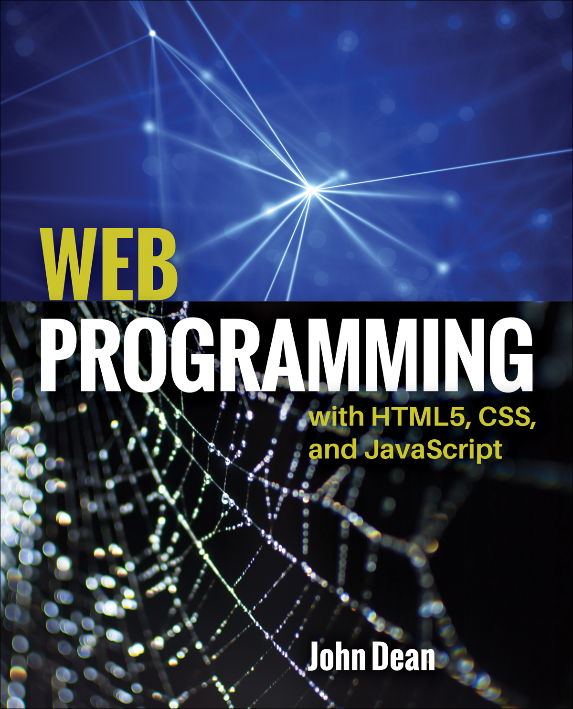

 Web programming refers to the writing, markup and coding involved in Web development,
which includes
Web content, Web client and server scripting and network security.
The most common languages used for Web programming are
XML, HTML, JavaScript, Perl 5 and PHP.
system analysis
System analysis and design is a process that many companies use to evaluate particular business situations and develop ways to improve them through more optimal methods. Companies may use this process to reshape their organization or meet business objectives related to growth and profitability.
operating system
An operating system (OS) is the program that, after being initially loaded into the
computer by a boot program, manages all of the other application programs in a computer.
The application programs make use of the operating system by making requests
for services through a defined application program interface (API).
project management
Project management is a discipline of planning, controlling,
securing and organizing resources to attain specific objectives .
A project can be perceived as an impermanent endeavour with a defined starting and end
, undertaken to convene unique objectives and goals, normally to bring about useful change.